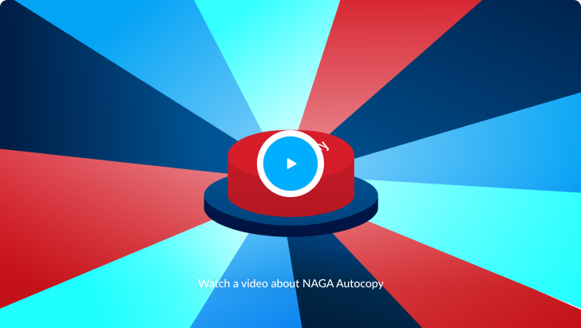

Join a financial community, follow the best traders and copy the operations of the
best
performing ones.
When they trade, you do it too. Their success becomes yours
too!

What is Autocopy?
NAGA Autocopy is an innovative feature that lets you
automatically copy leading
traders on the platform and gain from their experience.
Autocopy enables you to trade like a expert.
Find the traders you want to copy from the leaderboard
and simply hit Autocopy.
How does autocopy trading work?
It’s pretty simple. Choose the trader you’d like to
Autocopy, input the amount of funds you’d like to allocate and click Autocopy. You just
started mirroring the leading trader’s positions automatically and in real time! You can
close and individual trades or pause autocopying any trader, any time you want.